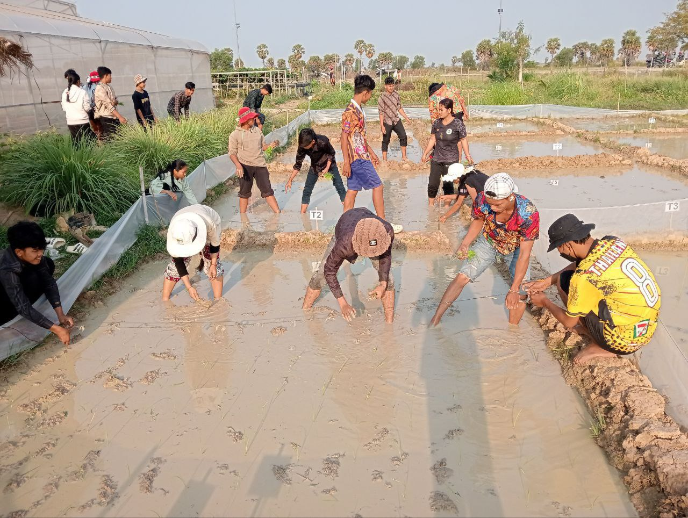
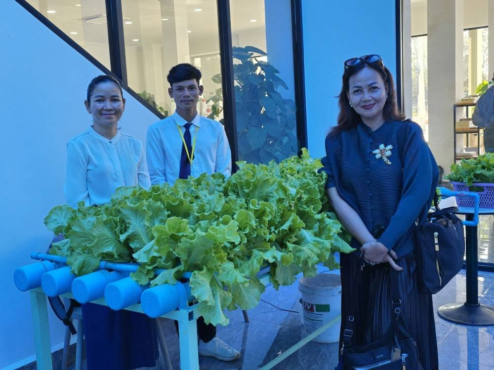
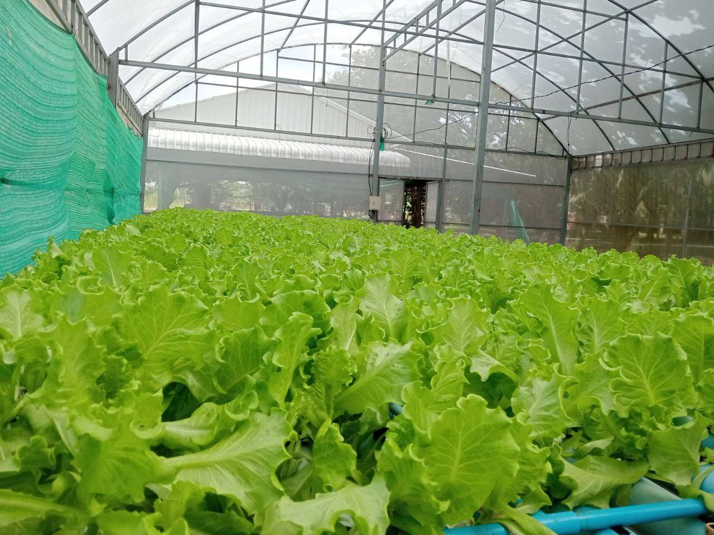

ជំនាញ ក្សេត្រសាស្ត្រ
យើងផ្តល់ការអប់រំគុណភាពខ្ពស់ ដើម្បីអភិវឌ្ឍសិស្សឲ្យមានចំណេះដឹង និងជំនាញសម្រាប់អនាគត។
យើងផ្តល់ការអប់រំគុណភាពខ្ពស់ ដើម្បីអភិវឌ្ឍសិស្សឲ្យមានចំណេះដឹង និងជំនាញសម្រាប់អនាគត។
កម្មវិធីសិក្សាជំនាញក្សេត្រសាស្ត្ររៀបចំឡើងក្នុងគោលបំណង ចូលរួមអភិវឌ្ឍជំនាញបច្ចេកទេស ដើម្បី
ឆ្លើយតបទៅនឹងតម្រូវការសហគមន៍ ទីផ្សារការងារក្នុងតំបន់ និងបន្តការសិក្សាពេញមួយជីវិត ដើម្បីបំពេញ
តម្រូវការការងារក្នុងវិស័យផលិតកម្មកសិកម្មជាមួយនឹងចំណេះដឹងមូលដ្ឋាន ចំណេះដឹងបច្ចេកទេស ដែល
ទាក់ទងទៅនឹងការដាំដំណាំ ការប្រើប្រាស់និងការកែច្នៃផលិតផលកសិកម្មប្រកបដោយគុណធម៌ ដឹកនាំ
សហគមន៍ឱ្យមានការអភិវឌ្ឍប្រកបដោយនិរន្តរភាព។
១.២/ សមត្ថភាពជំនាញរំពឹងទុកក្រោយបញ្ចប់ការសិក្សា
បន្ទាប់ពីសិស្សបញ្ចប់ពីកម្មវិធីសិក្សាជំនាញក្សេត្រសាស្ត្រ សិស្សនឹងទទួលបាននូវសមត្ថភាពជំនាញដូច ខាងក្រោម
៖
ក.បច្ចេកទេសដាំដុះដំណាំស្រូវ ដំណាំចំការ ដំណាំហូបផ្លែ និងដំណាំបន្លែ
ខ .បច្ចេកទេសនៃការផលិតជីសរីរាង្គ ការកែប្រែគុណភាពដី ការកែច្នៃកសិកសិកម្ម តាមបែប បច្ចេកទេសទំនើប
គ. បច្ចេកទេសប្រើប្រាស់គ្រឿងម៉ាស៊ីនកសិកម្មបច្ចេកទេសទំនើប
ឃ. បច្ចេកទេសស្ទង់មតិ ការយល់ដឹងពីសហគមន៍ជនបទ សមត្ថភាពលើការគ្រប់គ្រងអាជីវកម្ម និង
ផ្នត់គំនិតជាអ្នកផ្តល់សេវាកម្ម ដើម្បីគ្របដណ្តប់លើកំណើនតម្រូវការវិស័យបច្ចេកវិទ្យា និងឧស្សាហកម្ម។
ការតម្រង់ទិសសម្រាប់អនាគត ជាចំណុចដៅរយៈពេលវែង ហើយមុខងារនៃការអប់រំគឺជាការកសាង វប្បធម៌សង្គមឡើងវិញ
អភិវឌ្ឍគុណវុឌ្ឍនៃស្រទាប់មនុស្សជំនាន់ក្រោយ ការចែកចាយមនុស្សដែលមាន សមត្ថភាព
សម្រាប់មុខតំណែងផ្សេងៗក្នុងសង្គម និងការធ្វើសមាហរណកម្មសង្គម។ វាជាគម្រោង ដែលមាន រយៈពេលវែងជាងអាយុមនុស្ស១ជំនាន់។
ការអប់រំបច្ចេកទេស ក៏គួរត្រូវបានអនុវត្តផងដែរសម្រាប់អនាគត។
ការតម្រង់ទិសទៅរកអនាគតការអប់រំបច្ចេកទេសនៅប្រទេសកម្ពុជាមានទិដ្ឋភាព៣យ៉ាងគឺ៖
ទី១ ក្រុមគោលដៅ៖ ការអប់រំបច្ចេកទេសត្រូវបានសម្របសម្រួលសម្រាប់យុវជន និងយុវនារី វ័យក្មេង
នៅសាលាចំណេះទូទៅនិងបច្ចេកទេស (ថ្នាក់ឆ្នាំទី១ដល់ទី៣)។ ជីវិតការងាររបស់ពួកគេអាចមាន រយៈពេលជាង៤០ឆ្នាំ
ក្រោយពេលបញ្ចប់ការសិក្សាពីសាលារៀន។ ការសិក្សានៅវ័យនេះមានឥទ្ធិពលទៅលើ ជីវិតទាំងមូលរបស់ពួកគេ។
ទី២ ការកសាងខ្លឹមសារសិក្សា៖ ចំណេះដឹង និងបណ្តាបំណិនមានការប្រែប្រួលយ៉ាងឆាប់រហ័ស នៅគ្រប់ទីកន្លែង។
សិស្សានុសិស្សមិនត្រឹមតែសិក្សាយកចំណេះដឹងដែលបានដៅទុកប៉ុណ្ណោះទេ ប៉ុន្តែក៏ត្រូវ សិក្សាផងដែរ
នូវចំណេះដឹងទូទៅមូលដ្ឋាន និងក្រេបយកបំណិនត្រិះរិះពិចារណាស៊ីជម្រៅ ដែលអាចធ្វើឱ្យ ពួកគេអាចរក្សា
និងបង្កើននូវគុណតម្លៃនាពេលអនាគត។
ទី៣ ការសិក្សាពេញមួយជីវិត៖ ការបណ្តុះឱ្យមានការស្រឡាញ់ការសិក្សា ឱ្យចេះព្យាយាមតស៊ូ ដោះស្រាយបញ្ហា
និងបង្កលក្ខណៈឱ្យពួកគេរត់រកការងារ ព្រមទាំងបន្តការសិក្សាពេញមួយជីវិតបាន។ ដូចគ្នា នេះដែរ
ការអប់រំបច្ចេកទេសវិជ្ជាជីវៈនៅមធ្យមសិក្សាទុតិយភូមិ មានលក្ខណៈខុសពីការបណ្តុះបណ្តាល វិជ្ជាជីវៈ
ដែលមានរយៈពេលខ្លី។
៣.១/ រចនាសម្ព័ន្ធកម្មវិធីសិក្សា
កម្មវិធីសិក្សាផ្នែកអប់រំបច្ចេកទេសរួមមាន៖ មុខវិជ្ជាសិក្សា សកម្មភាពក្រៅម៉ោងសិក្សា និងកម្មសិក្សា។
មុខវិជ្ជាសិក្សាត្រូវបានបែងចែកជាមុខវិជ្ជាចំណេះទូទៅ និងមុខវិជ្ជាវិជ្ជាជីវៈ។
ក. មុខវិជ្ជាចំណេះទូទៅ មាន ភាសាខ្មែរ ភាសាអង់គ្លេស គណិតវិទ្យា កុំព្យូទ័រ សីលធម៌និងពលរដ្ឋវិទ្យា កីឡា
ជីវវិទ្យា គីមីវិទ្យា និងរូបវិទ្យា។ បំណែងចែកម៉ោងសិក្សាតាមកម្រិតស្តង់ដា សម្រាប់មុខវិជ្ជាចំណេះទូទៅ
ត្រូវបានអនុវត្តដូចគ្នាសម្រាប់មុខវិជ្ជាវិជ្ជាជីវៈ។
ខ. មុខវិជ្ជាវិជ្ជាជីវៈ រួមមានមុខវិជ្ជាបច្ចេកទេសវិជ្ជាជីវៈ និងមុខវិជ្ជាវិជ្ជាជីវៈតាមមូលដ្ឋាន។
មុខវិជ្ជា បច្ចេកទេសវិជ្ជាជីវៈ គប្បីត្រូវបានរៀបចំឡើង ដើម្បីជួយសិស្សឱ្យសម្រេចនូវគោលដៅអប់រំតាមមុខជំនាញ
បច្ចេកទេសនីមួយៗ។ មុខវិជ្ជាវិជ្ជាជីវៈតាមមូលដ្ឋាន ត្រូវបានរៀបចំឡើង ដើម្បីជួយសិស្សឱ្យរៀនអនុវត្តជាក់
ស្តែង ស្របតាមតម្រូវការទីផ្សារការងារក្នុងមូលដ្ឋាន។ មុខវិជ្ជាវិជ្ជាជីវៈ ត្រូវបានរៀបចំជាតារាងដែលមានគោល
ដៅ អប់រំទៅតាមមុខជំនាញបច្ចេកទេសនីមួយៗ។
គ. កម្មសិក្សាប្រតិបត្តិ បានផ្តល់ឱកាសឱ្យសិស្សទទួលបានបទពិសោធតាមរយៈការអនុវត្តការងារ និង
ដើម្បីរៀនអំពីចំណេះដឹង និងបំណិនក្នុងការបំពេញការងារជាក់ស្តែង។ ម៉ោងសម្រាប់កម្មសិក្សាប្រតិបត្តិ មិន
ត្រូវបានរាប់បញ្ចូលក្នុងកម្មវិធីសិក្សាផ្នែកអប់រំបច្ចេទេសទេ។
បន្ទាប់ពីសិស្សបានបញ្ចប់កម្មវិធីសិក្សាជំនាញក្សេត្រសាស្ត្រឆ្នាំទី១ សិស្សនឹងទទួលបាននូវសមត្ថភាព
ដូចខាងក្រោម ៖
ក. ការដាំដុះដំណាំនិងការគ្រប់គ្រងដំណាំចំការ តាមបែបប្រពៃណីនិងបច្ចេកទេសទំនើប និងការប្រើ ប្រាស់ដីនិងជី
ខ. ការជ្រើសរើសពូជដំណាំ ការរៀបចំប្រព័ន្ធនៃការដាំដុះ និងវិធានការនៃការការពារដំណាំ
គ. ការធ្វើសំណាកលក្ខណៈរូបសាស្ត្ររបស់ដំណាំ ការចុះយកប្រូហ្វាល់ដី ការបណ្តុះកូនដំណាំ និងការ
ធ្វើផែនការចំណូលចំណាយ
ឃ. ការជ្រើសរើសប្រភេទដំណាំចំការ បច្ចេកទេសក្នុងការដាំដុះដំណាំ វិធីសាស្ត្រក្នុងការប្រមូលផល
និងការគ្រប់គ្រងផលិតផលដំណាំស្របតាមលក្ខណៈបច្ចេកទេស
ង. ការប្រើប្រាស់ឧបករណ៍ សម្ភារៈ វិធីសាស្ត្រនៃការវាស់វែង និងការរៀបចំហេដ្ឋារចនាសម្ព័ន្ធក្នុង
កសិដ្ឋានដាំដុះស្របតាមបច្ចេកទេសទំនើប
ច. ការបែងចែកប្រភេទដី រង្វាយតម្លៃលើការវិភាគដី និងការផលិតជីសរីរាង្គ ។
បន្ទាប់ពីសិស្សបានបញ្ចប់កម្មវិធីសិក្សាជំនាញក្សេត្រសាស្ត្រឆ្នាំទី២ សិស្សនឹងទទួលបាននូវសមត្ថភាព
ដូចខាងក្រោម ៖
ក. ការដាំដុះដំណាំចំការ និងការដាំដុះដំណាំស្រូវ តាមបែបប្រពៃណីនិងបច្ចេកទេសទំនើប និងការស្ទង់
មតិនិងស្រាវជ្រាវនៅតាមមូលដ្ឋាន
ខ. ការដាំដំណាំស្រូវ ពោត សណ្ដែក អំពៅ និងម្រេច ដែលទទួលបានទិន្នផលខ្ពស់
គ. ការជ្រើសរើសគ្រាប់ពូជ ការបណ្តុះគ្រាប់ពូជស្រូវ និងវិធីសាស្ត្ររៀបចំថ្នាលសំណាប
ឃ. ការប្រើប្រាស់គ្រឿងម៉ាស៊ីន ត្រាក់ទ័រឬគោយន្ត ម៉ាស៊ីនបូមទឹកលើផលិតកម្មដំណាំ និងប្រើប្រាស់
ប្រព័ន្ធស្រោចស្របបែបទំនើប
ង. ការបង្កើតបញ្ជីសំណួរ និងប្រើប្រាស់កម្រងសំណួរ ក្នុងការប្រមូលទិន្នន័យ
ច. ការប្រើប្រាស់វិធីសាស្ត្រក្នុងការសម្ភាសប្រកបដោយក្រមសីលធម៌ទៅកាន់អ្នកដទៃ
ឆ. ការសរសេររបាយការណ៍ស្នើសុំប្រធានបទស្រាវជ្រាវតាមបែបពិសោធ និងអង្កេត។
បន្ទាប់ពីសិស្សបានបញ្ចប់កម្មវិធីសិក្សាជំនាញក្សេត្រសាស្ត្រឆ្នាំទី៣ សិស្សនឹងទទួលបាននូវសមត្ថភាព
ដូចខាងក្រោម ៖
ក. ការដាំដុះដំណាំស្រូវ ដំណាំសរីរាង្គ ការចែកចាយនិងការកែច្នៃផលិតផលកសិកម្ម និងការស្ទង់មតិ
និងស្រាវជ្រាវនៅតាមមូលដ្ឋាន
ខ. ការបណ្តុះគ្រាប់ស្រូវ និងប្រៀបធៀបពីលក្ខណៈរូបសាស្ត្រសរីរាង្គលូតលាស់ និងសរីរាង្គបន្តពូជនៃ ដំណាំស្រូវ
គ. ការកំណត់ប្រភេទស្មៅ ប្រភេទសត្វល្អិតចង្រៃ សត្វល្អិតមានប្រយោជន៍ ដំណើរការនៃការប្រមូលផល ការរក្សាទុក
និងការប្រើប្រាស់ជីដែលមានគុណភាពនៅលើដីស្រែសម្រាប់ដំណាំស្រូវ
ឃ. ការរៀបចំគម្រោងផែនការកសិដ្ឋាន និងការវិភាគដីលើដំណាំសរីរាង្គ
ង. ការផលិតជីកំប៉ុស្តិ៍ និងរុក្ខជាតិសម្រាប់ធ្វើជីស្រស់លើដំណាំសរីរាង្គ
ច. ការធ្វើចំណាត់ថ្នាក់ទីផ្សារ យុទ្ធសាស្រ្តទីផ្សារ និងផែនការផលិតផលកសិកម្ម ដើម្បីរៀបចំបង្កើត
ផលិតផលថ្មីចូលក្នុងទីផ្សារ
ឆ. ការបណ្តុះគំនិតជាសហគ្រិនភាពដែលមានសមត្ថភាពលើការគ្រប់គ្រងអាជីវកម្មខ្នាតតូច និងមាន
ផ្នត់គំនិតជាអ្នកផ្តល់សេវាកម្មផ្នែកចែកចាយផលិតផលកសិកម្ម
ជ. ការកែច្នៃផលិតផលកសិកម្មប្រកបដោយគុណធម៌ និងគិតដល់សុវត្ថិភាពរបស់អ្នកបរិភោគជាចម្បង
ឈ. ការសរសេរគម្រោងស្រាវជ្រាវបែបបង្កើតថ្មី ប្រមូលនិងវិភាគទិន្នន័យបានច្បាស់លាស់។

ការសិក្សាជាក្រុមនៅក្នុងថ្នាក់ ដើម្បីដោះស្រាយលំហាត់

ការថែទាំដំណាំស្ពៃ សម្អាតស្មៅ និងការដាក់ជីធម្មមជាតិ

ការបណ្ដុះកូនស្រូវ ដើម្បីពិសោធន៍ក្នងការដាំដុះស្រូវនៅក្ននុងស្រែ

ការដាំដុះដំណាំស្រូវ សម្រាប់ពិសោធន៍ងរបស់សិស្សានុសិស្ស

ការអនុវត្តរៀបចំរងដំណាំសម្រាប់ដាំដុះបន្លែរចម្រុះនៅលើដី

ការថែទាំដំណាំ ប៉េងប៉ោះ និងការដាក់ជិជំនួសដើម

ការថែទាំដំណាំ ប៉េងប៉ោះ និងការដាក់ជិជំនួសដើម

ការតាំងពិព័រណ៍ ស្នាដៃសិស្សដែលសម្រេចបានក្នុងឆ្នាំនីមួយៗ
តាំងពិព័រណ៍បន្លែសរិរាង្គ ដែលដាំដុះដោយសិស្សានុសិស្ស

ការដាក់បង្ហាញស្នាដៃសិស្សានុសិស្សអំពីដំណាំលើទឹក

ការដំណាំសាឡាត់ស្រួលនៅលើទឹកគុណភាពខ្ពស់ (ហៃត្រូ)

ការប្រមូលផលបន្លែស្ពៃធម្មជាតិ ដើម្បីផ្គត់ផ្គង់ទីផ្សាក្នុងភូមិស្រុក